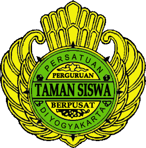

Welcome to Tamansiswa 2 Jakarta
SMK Tamansiswa 2 Jakarta – yang dalam bahasa Tamansiswa nya disebut Taman Karya Madya Teknik (TKMT) – merupakan Sekolah Teknologi Swasta di wilayah Kemayoran, Jakarta Pusat, yang didirikan tahun 1976 dengan Kepala Sekolah pertamanya Ki Moh. Said Reksohadiprojo sekaligus merangkap Ketua Majelis Cabang Perguruan Tamansiswa Jakarta saat itu.
-
Our Admissions
Salam dan bahagia, Pendaftaran Peserta Didik Baru SMK Tamansisa 2 Jakarta telah dibuka! Yuk, persiapkan dirimu untuk mendaftar dengan cara datang langsung ke SMK Tamansiswa 2 Jakarta atau bisa menghubungi WhatsApp dibawah ini
Call Center
Dapatkan promo HANYA DENGAN Rp 700.000 kamu bisa mendaftar ke SMK Tamansiswa 2 Jakarta, loh! Untuk kamu yang dari SMP Tamansiswa (Taman Dewasa) Jakarta, kalian juga akan mendapatkan diskon tambahan sebesar Rp 500.000 jika kalian mendaftar sekarang juga.
-
StructureOrganization
Kepala Sekolah: KI ROHMAT TULLOH
Wakil Kepala Sekolah Bidang Kurikulum: KI BAGUS PRASETYO
Wakil Kepala Sekolah Bidang Kesiswaan: KI SURAHMAN
Wakil Kepala Sekolah Bidang Hubungan Masyarakat dan Industri: KI FITRA DIAN KUSUMA SEMBADA
Wakil Kepala Sekolah Bidang Sarana Prasarana dan Administrasi: KI ZULFAHRIZAL